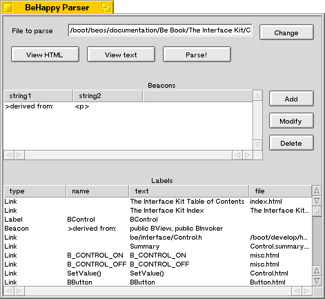

| BHAdd-ons.h | Header file with constants definitions and export declarations. It must be included in your project. |
|
HappyLink.h HTMLFile.h HTMLProject.h |
Class definitions |
| Add-On.proj | Project file to build the add-on. |
|
Add-On.h Add-On.cpp |
Header and source file for the add-on. You will modify these files. |
|
HappyTest.a Add-On Test.proj |
Library and project file that can be used to test the add-on. |
| Parser | An application that parses HTML files and find what links, labels and beacons can be found. You can use this application to try a few things before putting them in your source code. |
You'll also find two examples. The BeHappy Documentation Add-on is the best one, because it's more complete and more commented than the other one (OpenGL specifications).
The Parser application uses the same classes used in the add-on to parse HTML files. That way you can see exactly what can be found with my classes, and how the beacons can be used to extract information from HTML files.

First give the name of the HTML file you want to study, or use the 'Change' button to browse the hard disk. You can use the 'View HTML' and 'View text' buttons to see the HTML file or the source code. When you're ready, click on the 'Parse!' button.
When the parsing is finished, the results are shown in the 'Labels' list at the bottom. When a beacon is found, it is also put in the list (under the type 'Beacon'). When the beacon is made of two strings, the text between the two strings in showed in the 'text' column. You see in this example that it's possible to find the fathers of 'BControl' by using this beacon.
The list in the middle lets you add some beacons to search. The beacons are searched in the order you put them in the list. That means if a beacon isn't found, the following ones aren't even searched. Just click on Add to add a new beacon. A window will open, with two boxes to fill: string1 and string2. Close the window and the beacon is created. (I know I sould have put an 'OK' button, and I will do this one day) If you fill only string1, the string will be searched, and the beacon will appear in the 'Labels' list when found. If you fill both strings, the parser will also show what text was found between the two strings in the HTML file (in the 'lext' column).
The 'modify' button lets you change the two strings, and I let you guess what the 'Delete' button is for ;-)
This lets you test your add-on without launching BeHappy. Just link your code with the HappyTest.a library (or use the supplied Add-On Test.proj project). This will build an executable that executes your add-on's Update() function. You can interrupt the update (with the pause button), or cancel it (with the stop button). Then the main window shows you the whole tree. (Like the one shown at the top of the previous page :How does it work)
Once you have exactly what you want, you can try and build a real add-on and give it to BeHappy.
Note: before using the Add-On.proj file, you must add the path of BeHappy's executable to the project's paths. If you don't do this, you'll have the "Can't find BeHappy" error during the link stage.